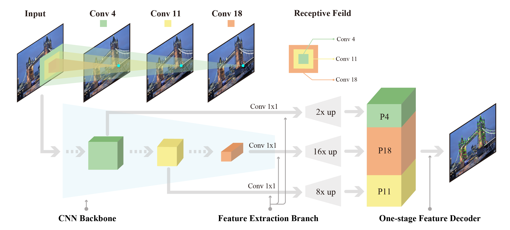

1Purdue University
2University of Florida
3Fudan University
35th AAAI Conference on Artificial Intelligence 2021

In this work, we introduce a Denser Feature Network (DenserNet) for visual localization. Our work provides three principal contributions. First, we develop a convolutional neural network (CNN) architecture which aggregates feature maps at different semantic levels for image representations. Using denser feature maps, our method can produce more keypoint features and increase image retrieval accuracy. Second, our model is trained end-to-end without pixel-level annotation other than positive and negative GPS-tagged image pairs. We use a weakly supervised triplet ranking loss to learn discriminative features and encourage keypoint feature repeatability for image representation. Finally, our method is computationally efficient as our architecture has shared features and parameters during computation. Our method can perform accurate large-scale localization under challenging conditions while remaining the computational constraint. Extensive experiment results indicate that our method sets a new state-of-the-art on four challenging large-scale localization benchmarks and three image retrieval benchmarks.